- Armatex
- Złączki lutowane
- Trójnik równoprzelotowy 5130
Besco · Miedź lutowana EN 1254
Trójnik równoprzelotowy miedziany lutowany EN 1254 5130
Trójnik równoprzelotowy z linii miedź lutowana EN 1254: 18 rozmiarów od 6 × 6 × 6 do 108 × 108 × 108 mm. Zastosowanie: woda, ogrzewanie, gaz, przemysł. Norma EN 1254.
- Rozmiary
- 18
- Ciśnienie
- 25 bar
- Temperatura
- −20…110 °C

Rozmiary i numery artykułów
Źródło: katalog Besco 2026| Rozmiar | Nr artykułu | Worek | Karton | Ilość do zapytania |
|---|---|---|---|---|
| 6 × 6 × 6 | 5130-6 | 25 szt. | 2 000 szt. | |
| 8 × 8 × 8 | 5130-8 | 25 szt. | 1 000 szt. | |
| 10 × 10 × 10 | 5130-10 | 25 szt. | 800 szt. | |
| 12 × 12 × 12 | 5130-12 | 25 szt. | 500 szt. | |
| 14 × 14 × 14 | 5130-14 | 25 szt. | 300 szt. | |
| 15 × 15 × 15 | 5130-15 | 25 szt. | 300 szt. | |
| 16 × 16 × 16 | 5130-16 | 10 szt. | 250 szt. | |
| 18 × 18 × 18 | 5130-18 | 10 szt. | 150 szt. | |
| 22 × 22 × 22 | 5130-22 | 10 szt. | 60 szt. | |
| 28 × 28 × 28 | 5130-28 | 10 szt. | 40 szt. | |
| 35 × 35 × 35 | 5130-35 | 5 szt. | 20 szt. | |
| 42 × 42 × 42 | 5130-42 | 5 szt. | 15 szt. | |
| 54 × 54 × 54 | 5130-54 | 2 szt. | 8 szt. | |
| 64 × 64 × 64 | 5130-64 | 1 szt. | 8 szt. | |
| 67 × 67 × 67 | 5130-67 | 1 szt. | 2 szt. | |
| 76 × 76 × 76 | 5130-76 | 1 szt. | 2 szt. | |
| 89 × 89 × 89 | 5130-89 | 1 szt. | 2 szt. | |
| 108 × 108 × 108 | 5130-108 | 1 szt. | 3 szt. |
- Linia
- Miedź lutowana EN 1254
- Zastosowanie
- woda, ogrzewanie, gaz, przemysł
- Norma
- EN 1254
- Aprobaty
- DVGWKIWAWRAS
- Nazwa w katalogu
- Equal Tee
Zapytaj o ofertę: Trójnik równoprzelotowy 5130.
Dodaj rozmiary do listy przyciskiem „Dodaj” albo od razu napisz do nas. Ceny hurtowe, dostępność i terminy przygotujemy w ciągu jednego dnia roboczego.
Inne produkty w linii
Szukaj w linii Lutowane EN 1254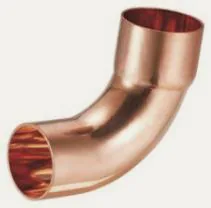
Łuk 90° wz5001 · 18 rozm.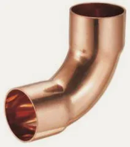
Łuk 90° ww5002 · 18 rozm. Łuk 45° wz5040 · 17 rozm.
Łuk 45° wz5040 · 17 rozm. Łuk 45° ww5041 · 18 rozm.
Łuk 45° ww5041 · 18 rozm.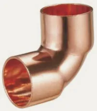
Kolano 90° ww5090 · 18 rozm.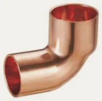
Kolano 90° wz5092 · 18 rozm.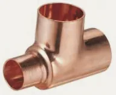
Trójnik redukcyjny5130 · 113 rozm. Mufa redukcyjna ww5240 · 54 rozm.
Mufa redukcyjna ww5240 · 54 rozm. Redukcja wz5243 · 62 rozm.
Redukcja wz5243 · 62 rozm.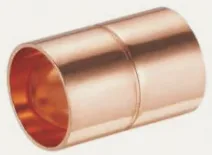
Mufa5270 · 18 rozm. Zaślepka5301 · 15 rozm.
Zaślepka5301 · 15 rozm.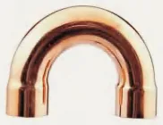
Łuk 180° powrotny5060 · 10 rozm.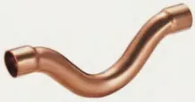
Mijanka ww5085 · 6 rozm. Mijanka wz5086 · 6 rozm.
Mijanka wz5086 · 6 rozm. Półśrubunek kątowy 90°5002G · 6 rozm.
Półśrubunek kątowy 90°5002G · 6 rozm. Półśrubunek z GW5359G · 4 rozm.
Półśrubunek z GW5359G · 4 rozm. Kolano 90° z GW4090 · 12 rozm.
Kolano 90° z GW4090 · 12 rozm. Kolano 90° z GZ4092 · 10 rozm.
Kolano 90° z GZ4092 · 10 rozm.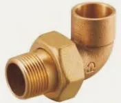
Śrubunek kątowy 90° z GZ4098 · 4 rozm.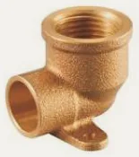
Kolano ścienne z GW4472 · 8 rozm.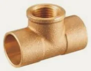
Trójnik z GW4130 · 10 rozm. Złączka z GW4270 · 19 rozm.
Złączka z GW4270 · 19 rozm. Złączka z GZ4243 · 23 rozm.
Złączka z GZ4243 · 23 rozm.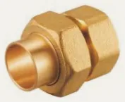
Śrubunek z GW (uszczelnienie stożkowe)4330G · 4 rozm.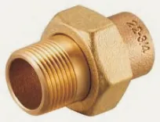
Śrubunek z GZ4331 · 4 rozm.